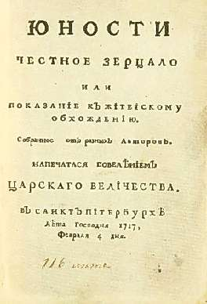

Борис Акунин
Мой календарь
Разумеется, прилично вести себя нужно всегда, но сегодня следует являть собой просто образец учтивости и этикета. Особенно россиянам.
Потому что 15 февраля 1717 года в России впервые был опубликован кодекс воспитанного человека: «Юности честное зерцало, или Показание к житейскому обхождению».
Быть приличным человеком очень непросто. Гораздо легче и удобнее быть неприличным. Но ничего не поделаешь, нужно себя заставлять, иначе, предупреждает «Зерцало», не видать вам ни «щастья благополучного», ни «красоты в старости».
Итак, сегодня:
- Неприлично руками или ногами по столу везде колобродить.
- Не должно носом храпеть, и глазами моргать и ниже шею и плеча якобы из повадки трясти.
Далее (извините, что на «ты»):
- Над ествою не чавкай, как свинья, и головы не чеши, не проглотя куска.
Очень важное:
- На людей глядеть весело и приятно, с благообразным постоянством.
И самое главное:
«Никакое неполезное слово или непотребная речь да не изыдет из устен твоих».
Держитесь. Такой уж это день. Завтра можно будет расслабиться.